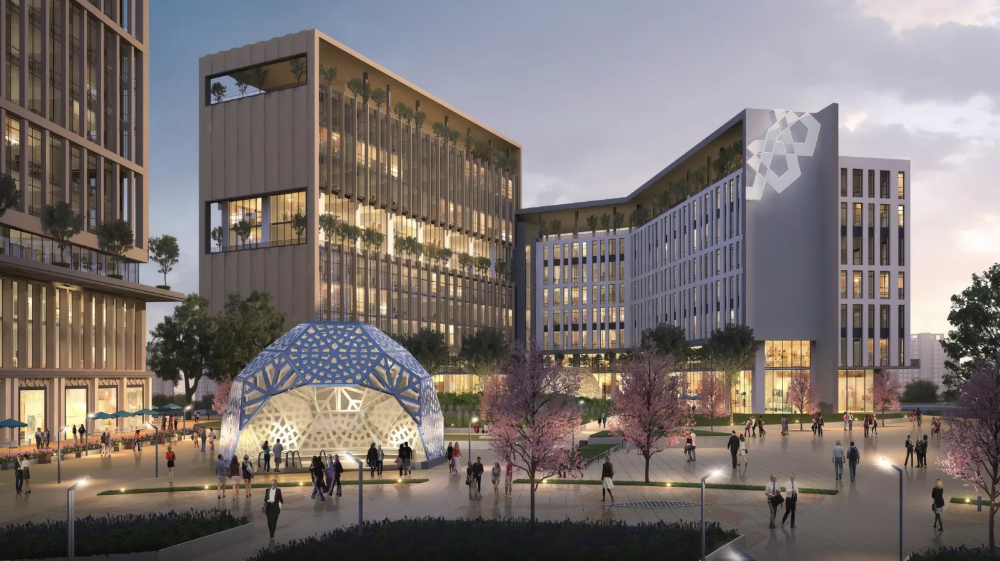
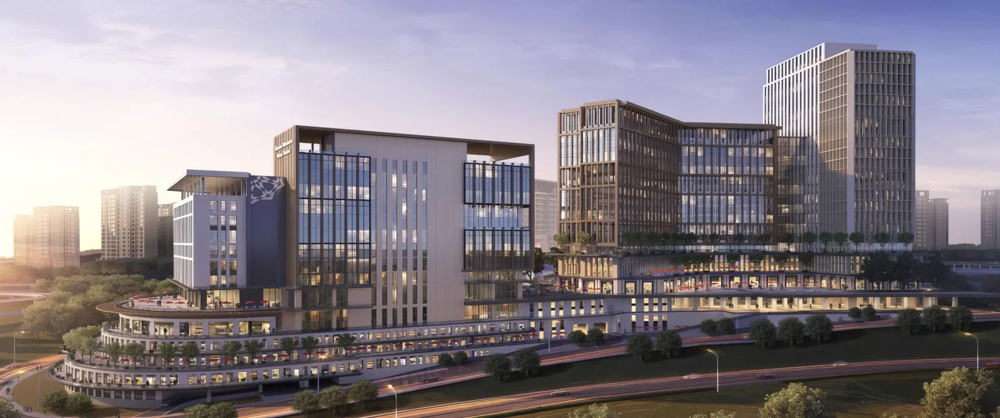
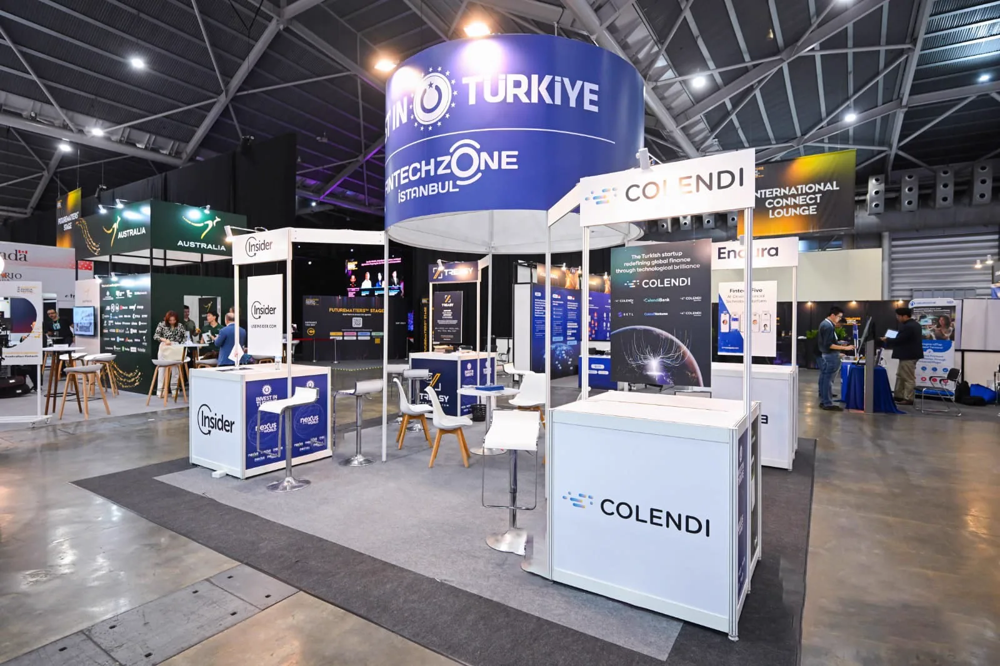

Kümelenme programı 01
Fintech Hub
Girişimcilerin ve yenilikçilerin, ulusal ve uluslararası ağlarla buluştuğu, destek ve kaynaklarla donatılmıştır.

Fintech Zone Kuluçka Merkezi'nde yenilikçi ve dinamik bir çok programı fintek girişimcilerinin hizmetine sunuyoruz. Siz de bu ekosistemin bir parçası olun, finansal teknolojilerin geleceğinde yerinizi alın.
Fintech Zone, fintek ekosisteminin tüm paydaşları için kümelenme odaklı programlar sunacaktır. Programlar girişimciler, finansal kurumlar, düzenleyiciler (kamu kurumları), hizmet sağlayıcılar, danışmanlar ve yatırımcılar dahil olmak üzere tüm fintek ekosistemi ve paydaşlarını desteklemek ve birbirine bağlamak için hayata geçirilecektir.
Yörünge kendiliğinden döner; üzerine gelince durur.
Ekosistem ihtiyaçları doğrultusunda hayata geçirilecek 8 kümelenme programı ile ekosistemi bir araya getirmeyi ve paydaşlarını desteklemeyi planlıyoruz.
Girişimcilerin ve yenilikçilerin, ulusal ve uluslararası ağlarla buluştuğu, destek ve kaynaklarla donatılmıştır.
Fintek girişimlerinin inovatif ürünlerini gerçek dünya koşullarında test etmelerine olanak tanıyacak, regülasyonlara uyumlarına yardımcı olacaktır.
Türk fintek ekosistemini uluslararası pazarlara açarak, yerel girişimlerin küresel rekabetçiliğini artırmayı ve yabancı girişimlerin Türkiye'de filizlenmesini sağlayacaktır.
Öğrenciler, girişimciler, akademisyenler ve finans sektörü profesyonellerini hedef alarak, fintek alanında bilgi ve beceri gelişimine katkıda bulunacaktır.
Fintek ekosisteminin çeşitli paydaşlarını birleştirerek bilgi paylaşımı, iş birlikleri ve ağ oluşturma fırsatları sunacak ve katılımcılara yeni bakış açıları kazandıracaktır.
Fintek ekosisteminin kapsamlı bir şekilde anlaşılmasını ve sektörel bilginin geliştirilmesini hedefleyen yayınlar sunacaktır.
Fintek ekosisteminin dinamiklerini kavramak ve finteklerin veriye dayalı karar alma süreçlerine yardımcı olacaktır.
Fintek girişimlerine performanslarını objektif kriterler temelinde değerlendirme ve gelişim alanlarını belirleme imkanı sunacaktır.

Finansal teknolojiler ile ekosistem arasında güçlü bir köprü görevi üstlenmekteyiz. Bu entegrasyonun Türkiye'nin bölgesel liderliğine katkı sağlayacağına inanıyoruz.
Fintech Zone, İstanbul Finans Merkezi'nin geniş perspektifi ile uyumlu bir şekilde, finansal teknolojiler alanında yenilikçiliğin ve iş birliğinin merkezi olarak hizmet vermektedir.
Yenilikçi finansal teknolojiler ile sektöre yeni bir soluk getirir, zenginlik kazandırır.
İFM'nin global vizyonuna paralel olarak, Türkiye'nin fintek dünyasındaki konumunu stratejik adımlarla güçlendirir.
Fintekler ile ekosistem arasında sinerji yaratıp, Türkiye'nin bölgesel liderlik rolünü pekiştirir.
Fintech Zone, Türkiye'nin fintek sektörünü küresel pazarlara taşımayı hedefleyen stratejik bir girişim olarak öne çıkmaktadır. Bu platform, Türk fintek girişimlerinin küresel rekabetçiliğini artırarak uluslararası başarı hikayeleri yazmalarını desteklemektedir.
G-Local programı aracılığıyla "Küresel Düşün, Yerel Hareket Et" felsefesini benimseyen Fintech Zone, Londra, Dubai, Singapur ve Malezya gibi dünyanın önde gelen fintek merkezlerinde temsilcilikler kurarak Türk fintek girişimlerinin uluslararası entegrasyonunu sağlayacaktır.
Fintech Zone, Türk fintek sektörü için hem bir başlangıç noktası hem de uluslararası başarıya giden yolun kapısı olarak önemli bir rol üstlenmektedir.
Küresel düşün, yerel hareket et.G-Local yaklaşımı

Ortaklık Yapımız
Beraber büyüyelim!Fintech Zone İstanbul ailesi olarak sizinle tanışmayı sabırsızlıkla bekliyoruz; sorularınız, fikirleriniz ve projeleriniz için her zaman buradayız.
Bize ulaşınBaşvuru sürecinde yanınızdayız: alanında uzman ekibimiz ön başvuru aşamasından itibaren ihtiyaç duyduğunuz her durumda gerekli desteği sağlamaktadırlar.